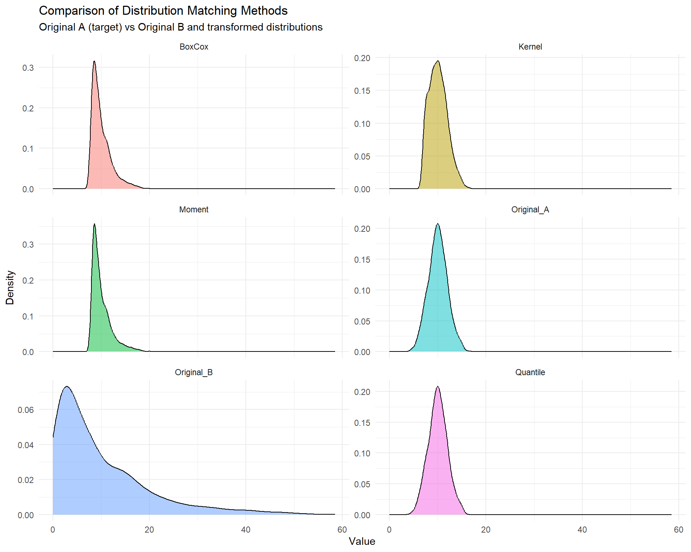

# Load required packages
library(MASS)
library(ks)
library(ggplot2)
library(patchwork)
library(tidyr)
library(dplyr)Distribution Matching Methods: From Theory to Practice
1 Introduction
When working with data from different sources or distributions, we often need to transform one distribution to match another. In this post, we’ll explore various methods for distribution matching, implement them in R, and discuss their strengths and limitations.
2 Distribution Matching Methods
2.1 Quantile Matching
Quantile matching transforms data by mapping corresponding quantiles between distributions. It’s a non-parametric approach that preserves the rank order of the original data.
Code
quantile_match <- function(A, B) {
probs <- seq(0, 1, length.out = length(A))
sorted_A <- sort(A)
B_transformed <- approx(x = probs,
y = sorted_A,
xout = rank(B)/(length(B) + 1),
method = "linear")$y
return(B_transformed)
}2.2 Box-Cox Transformation
The Box-Cox transformation is particularly useful when you want to transform data to approximate normality before matching moments.
Code
boxcox_match <- function(A, B) {
# Find optimal lambda for both distributions
bc_A <- boxcox(A ~ 1, plotit = FALSE)
lambda_A <- bc_A$x[which.max(bc_A$y)]
# Transform to normality
transform_boxcox <- function(x, lambda) {
if (abs(lambda) < 1e-4) {
log(x)
} else {
(x^lambda - 1) / lambda
}
}
# Transform both samples
A_transformed <- transform_boxcox(A, lambda_A)
B_transformed <- transform_boxcox(B, lambda_A) # Use same lambda
# Match moments
B_standardized <- (B_transformed - mean(B_transformed)) / sd(B_transformed)
B_matched <- B_standardized * sd(A_transformed) + mean(A_transformed)
# Inverse transform
inverse_boxcox <- function(x, lambda) {
if (abs(lambda) < 1e-4) {
exp(x)
} else {
(lambda * x + 1)^(1/lambda)
}
}
B_final <- inverse_boxcox(B_matched, lambda_A)
return(B_final)
}2.3 Kernel Density-Based Transformation
This method uses kernel density estimation to transform the distributions.
Code
kernel_density_match <- function(A, B, bw = "nrd0") {
# Estimate densities
density_A <- kde(A, h = bw.nrd0(A))
density_B <- kde(B, h = bw.nrd0(B))
# Calculate CDFs using numerical integration
cdf_A <- function(x) {
sapply(x, function(xi) {
mean(pnorm(xi, A, density_A$h))
})
}
cdf_B <- function(x) {
sapply(x, function(xi) {
mean(pnorm(xi, B, density_B$h))
})
}
# Transform B to match A's distribution
B_probs <- cdf_B(B)
# Create quantile function for A using interpolation
A_sorted <- sort(A)
A_probs <- cdf_A(A_sorted)
B_transformed <- approx(x = A_probs,
y = A_sorted,
xout = B_probs,
yleft = min(A),
yright = max(A))$y
return(B_transformed)
}2.4 Moment Matching
A simpler approach that focuses on matching the first two moments of the distributions.
Code
moment_match <- function(A, B) {
# Standardize B
B_std <- (B - mean(B)) / sd(B)
# Transform to match A's moments
B_transformed <- B_std * sd(A) + mean(A)
return(B_transformed)
}3 Comparing the Methods
Let’s generate some sample data and compare all methods:
Code
# Set seed for reproducibility
set.seed(123)
# Generate sample data
A <- rnorm(1000, mean = 10, sd = 2) # Normal distribution
B <- rexp(1000, rate = 0.1) # Exponential distribution
# Apply all transformations
B_quantile <- quantile_match(A, B)
B_boxcox <- boxcox_match(A, B)
B_kernel <- kernel_density_match(A, B)
B_moment <- moment_match(A, B)3.1 Visual Comparison
Let’s create a more elegant visualization using ggplot2:
# Create a data frame for plotting
df <- data.frame(
Original_A = A,
Original_B = B,
Quantile = B_quantile,
BoxCox = B_boxcox,
Kernel = B_kernel,
Moment = B_moment
)
# Convert to long format
df_long <- pivot_longer(df,
cols = everything(),
names_to = "Method",
values_to = "Value")
# Create the plot
ggplot(df_long, aes(x = Value, fill = Method)) +
geom_density(alpha = 0.5) +
facet_wrap(~Method, scales = "free_y", ncol = 2) +
theme_minimal() +
labs(x = "Value",
y = "Density",
title = "Comparison of Distribution Matching Methods",
subtitle = "Original A (target) vs Original B and transformed distributions") +
theme(legend.position = "none")
3.2 Numerical Comparison
Let’s compare some summary statistics:
# Function to calculate summary statistics
get_stats <- function(x) {
c(Mean = mean(x),
SD = sd(x),
Median = median(x),
Skewness = mean((x - mean(x))^3) / sd(x)^3,
Kurtosis = mean((x - mean(x))^4) / sd(x)^4)
}
# Calculate statistics for all distributions
stats_df <- data.frame(
Original_A = get_stats(A),
Original_B = get_stats(B),
Quantile = get_stats(B_quantile),
BoxCox = get_stats(B_boxcox),
Kernel = get_stats(B_kernel),
Moment = get_stats(B_moment)
)
# Display the results
knitr::kable(round(stats_df, 3))| Original_A | Original_B | Quantile | BoxCox | Kernel | Moment | |
|---|---|---|---|---|---|---|
| Mean | 10.032 | 9.837 | 10.031 | 10.031 | 10.093 | 10.032 |
| SD | 1.983 | 9.720 | 1.967 | 2.011 | 1.872 | 1.983 |
| Median | 10.018 | 6.684 | 10.018 | 9.424 | 9.989 | 9.389 |
| Skewness | 0.065 | 1.686 | 0.057 | 1.532 | 0.444 | 1.686 |
| Kurtosis | 2.920 | 6.075 | 2.842 | 5.459 | 2.736 | 6.075 |
4 Method Selection Guide
Each method has its strengths and appropriate use cases:
4.1 Quantile Matching
- Pros: Preserves rank order, works with any distribution
- Cons: May not extrapolate well
- Best for: General-purpose distribution matching
4.2 Box-Cox Transformation
- Pros: Works well for skewed data, preserves relationships
- Cons: Requires positive data, assumes underlying normality
- Best for: Right-skewed positive data
4.3 Kernel Density-Based
- Pros: Highly flexible, handles multimodal distributions
- Cons: Computationally intensive, sensitive to bandwidth selection
- Best for: Complex, multimodal distributions
4.4 Moment Matching
- Pros: Simple, fast, preserves linear relationships
- Cons: Only matches first two moments, assumes similar shapes
- Best for: Nearly normal distributions or quick approximations
5 Performance Comparison
Let’s compare the computational performance of these methods:
library(microbenchmark)
# Benchmark the methods
bench <- microbenchmark(
Quantile = quantile_match(A, B),
BoxCox = boxcox_match(A, B),
Kernel = kernel_density_match(A, B),
Moment = moment_match(A, B),
times = 100
)
# Plot results
autoplot(bench) +
theme_minimal() +
labs(title = "Performance Comparison",
subtitle = "Time taken by each method (lower is better)")6 Conclusion
While quantile matching is often the default choice for distribution matching, having multiple approaches in your toolkit allows you to handle various scenarios more effectively. The choice of method should depend on:
- Your data characteristics
- Computational resources
- Preservation requirements
- Desired properties of the transformed distribution
Always validate your transformations through both visual inspection and numerical summaries to ensure the transformed distribution meets your requirements.
7 References
- Box, G. E. P., & Cox, D. R. (1964). An analysis of transformations. Journal of the Royal Statistical Society: Series B (Methodological), 26(2), 211-243.
- Silverman, B. W. (1986). Density estimation for statistics and data analysis. CRC press.
- Bolstad, B. M., Irizarry, R. A., Åstrand, M., & Speed, T. P. (2003). A comparison of normalization methods for high density oligonucleotide array data based on variance and bias. Bioinformatics, 19(2), 185-193.